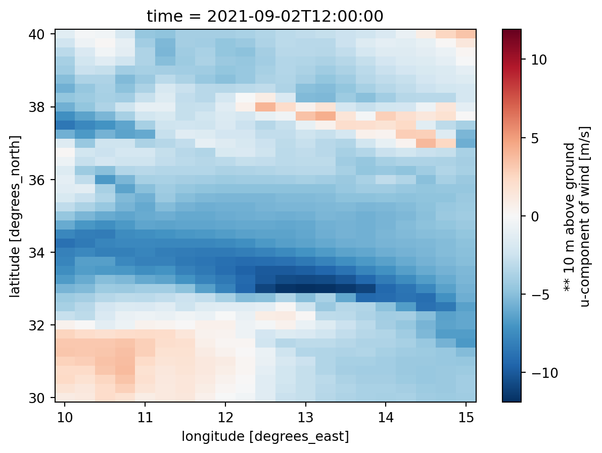

import xarray
import pandas as pd
import mikeioDfs2 - Meteo data
Conversion of NetCDF from Global Forecasting System to Dfs2
The file gfs_wind.nc contains a small sample of the GFS forecast data downloaded via their OpenDAP service
ds = xarray.open_dataset('../../data/gfs_wind.nc')
ds<xarray.Dataset> Size: 32kB
Dimensions: (time: 3, lat: 41, lon: 21)
Coordinates: (3)
Data variables:
msletmsl (time, lat, lon) float32 10kB ...
ugrd10m (time, lat, lon) float32 10kB ...
vgrd10m (time, lat, lon) float32 10kB ...
Attributes: (4)Running a Mike 21 HD model, needs at least three variables of meteorological forcing * Mean Sea Level Pressure * U 10m * V 10m
Let’s take a look the U 10m
ds.ugrd10m.isel(time=0).plot();
Convert to dfs2
Time
time = pd.DatetimeIndex(ds.time)
timeDatetimeIndex(['2021-09-02 12:00:00', '2021-09-02 15:00:00',
'2021-09-02 18:00:00'],
dtype='datetime64[ns]', freq=None)Variable types
mikeio.EUMType.Air_PressureAir Pressuremikeio.EUMType.Air_Pressure.units[hectopascal, millibar]mikeio.EUMType.Wind_VelocityWind Velocitymikeio.EUMType.Wind_Velocity.units[meter per sec, feet per sec, miles per hour, km per hour, knot]mslp = ds.msletmsl.values / 100 # conversion from Pa to hPa
u = ds.ugrd10m.values
v = ds.vgrd10m.valuesgeometry = mikeio.Grid2D(x=ds.lon.values, y=ds.lat.values, projection="LONG/LAT")
geometry<mikeio.Grid2D>
x: [10, 10.25, ..., 15] (nx=21, dx=0.25)
y: [30, 30.25, ..., 40] (ny=41, dy=0.25)
projection: LONG/LATfrom mikeio import ItemInfo, EUMType, EUMUnit
mslp_da = mikeio.DataArray(data=mslp,time=time, geometry=geometry, item=ItemInfo("Mean Sea Level Pressure", EUMType.Air_Pressure, EUMUnit.hectopascal))
u_da = mikeio.DataArray(data=u,time=time, geometry=geometry, item=ItemInfo("Wind U", EUMType.Wind_Velocity, EUMUnit.meter_per_sec))
v_da = mikeio.DataArray(data=v,time=time, geometry=geometry, item=ItemInfo("Wind V", EUMType.Wind_Velocity, EUMUnit.meter_per_sec))mds = mikeio.Dataset([mslp_da, u_da, v_da])
mds<mikeio.Dataset>
dims: (time:3, y:41, x:21)
time: 2021-09-02 12:00:00 - 2021-09-02 18:00:00 (3 records)
geometry: Grid2D (ny=41, nx=21)
items:
0: Mean Sea Level Pressure <Air Pressure> (hectopascal)
1: Wind U <Wind Velocity> (meter per sec)
2: Wind V <Wind Velocity> (meter per sec)mds.to_dfs("gfs.dfs2")Clean up
import os
os.remove("gfs.dfs2")